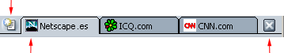

Netscape pone a su disposición este documento con fines exclusivamente informativos. Tal vez lo ayude a tomar medidas para proteger la confidencialidad y la seguridad de sus datos personales en Internet. No obstante, este documento no abarca todos los problemas de confidencialidad y seguridad en Internet, ni constituye una recomendación de Netscape acerca de la protección adecuada de la confidencialidad y la seguridad en Internet.
La personalización de Netscape
Puede personalizar Netscape para adaptarlo más a sus necesidades mediante el uso de funciones como Mi Barra lateral, los marcadores y la navegación con pestañas.
En esta sección se describen los aspectos personalizables de Navigator, el navegador de Netscape.
Mi Barra lateral
Qué es Mi Barra lateral
Mi Barra lateral es un marco personalizable del navegador en el que podrá mantener todos los elementos que necesite usar en cualquier momento, como las últimas noticias y el tiempo, el libro de direcciones o la Lista de contactos, los índices bursátiles y una agenda, entre muchas más opciones. Mi Barra lateral presenta estos elementos en pestañas que se actualizan continuamente.
Netscape incorpora algunas de las pestañas de Mi Barra lateral preestablecidas, pero puede personalizarla agregando, eliminando y reorganizando las pestañas.
[ Volver al inicio de la sección ]
Cómo se emplea Mi Barra lateral
A menos que la cierre, Mi Barra lateral estará siempre abierta en la parte izquierda de su navegador. Para visualizar una pestaña:
- Haga clic en el título de la pestaña., como por ejemplo, en Buscar. La pestaña Buscar se abrirá y usted podrá buscar páginas web.

|
Selector de Mi Barra lateral
|
|
Si no ve Mi Barra lateral, es posible que esté cerrada. Para abrirla:
- Mueva el puntero del ratón hacia arriba y hacia abajo sobre el borde izquierdo de la ventana de Netscape. El puntero se convierte en una mano al pasar sobre el selector de Mi Barra lateral.
- Haga clic sobre él para abrir Mi Barra lateral.
Nota: Si Mi Barra lateral no está seleccionada en el menú Ver de Navigator (dentro del submenú Mostrar/ocultar), no podrá ver el marco ni el selector.
|
Sugerencia: Para volver a cargar la pestaña Mi Barra lateral, haga clic con el botón derecho del ratón en el título de la pestaña y seleccione la opción Recargar en el menú emergente.
[ Volver al inicio de la sección ]
Cómo se agregan pestañas a Mi Barra lateral
Para agregar una pestaña nueva:
- Haga clic en "Pestañas", en la parte superior de Mi Barra lateral, y seleccione Personalizar Mi Barra lateral en el menú.
- En el cuadro de diálogo Personalizar Mi Barra lateral, seleccione una pestaña de la lista de la izquierda. Para abrir o cerrar una carpeta, haga doble clic en ella.
- Haga clic en Agregar.
- Puede agregar tantas pestañas como desee.
- Haga clic en Aceptar para terminar.
Nota: Si agrega más de ocho pestañas a Mi Barra lateral, Netscape ocultará las demás para evitar el abarrotamiento. Para desplazarse por las pestañas ocultas, haga clic en la flecha hacia abajo situada en la parte inferior de Mi Barra lateral hasta llegar a la pestaña deseada. Haga clic en la flecha hacia arriba para volver hacia arriba.
Sugerencia:
- Para obtener una vista preliminar de una pestaña de Mi Barra lateral antes de agregarla, seleccione la pestaña de la lista situada en la parte izquierda del cuadro de diálogo Personalizar Mi Barra lateral y haga clic en Vista preliminar. Tras unos segundos, la pestaña aparecerá en la ventana emergente Vista preliminar de la pestaña.
- Para ver una lista amplia y clasificada de las pestañas disponibles para Mi Barra lateral, haga clic en "Pestañas", en la parte superior de Mi Barra lateral, y seleccione Directorio de Mi Barra lateral.
También puede activar o desactivar las pestañas de Mi Barra lateral.
- Haga clic en "Pestañas", en la parte superior de Mi Barra lateral. Las pestañas existentes se visualizarán en la parte inferior del menú.
- Seleccione las pestañas que desea que se visualicen en Mi Barra lateral. Quite la marca de verificación para desactivar una pestaña (seguirá disponible en el menú).
Sugerencia: Para desactivar rápidamente una pestaña de Mi Barra lateral, haga clic con el botón derecho del ratón sobre su nombre y seleccione Ocultar pestaña.
[ Volver al inicio de la sección ]
Cómo se personalizan las pestañas de Mi Barra lateral
Nota: No todas las pestañas pueden personalizarse.
- Haga clic en "Pestañas", en la parte superior de Mi Barra lateral, y seleccione Personalizar Mi Barra lateral en el menú.
- Seleccione una pestaña disponible de la lista de la derecha.
- Haga clic en la opción Personalizar pestaña si está activada. Aparecerá una ventana con información y opciones para la personalización de la pestaña.
Las instrucciones pueden variar según el origen de la pestaña; además de Netscape, cualquier empresa, organización o usuario de Internet puede ser proveedor de pestañas.
- Después de seguir las instrucciones del proveedor de la pestaña, cierre la ventana de personalización (o siga las instrucciones del proveedor para cerrarla).
- Haga clic en Aceptar para terminar.
[ Volver al inicio de la sección ]
Cómo se reorganizan las pestañas de Mi Barra lateral
- Haga clic en "Pestañas", en la parte superior de Mi Barra lateral, y seleccione Personalizar Mi Barra lateral en el menú.
- Seleccione una pestaña de la lista de la derecha.
- Haga clic en Arriba y Abajo para cambiar la ubicación de la pestaña.
- Repita los pasos 1 y 2 para continuar reorganizando tantas pestañas como desee.
- Haga clic en Aceptar para terminar.
[ Volver al inicio de la sección ]
Cómo se eliminan pestañas de Mi Barra lateral
- Haga clic en "Pestañas", en la parte superior de Mi Barra lateral, y seleccione Personalizar Mi Barra lateral en el menú.
- Seleccione una pestaña de la lista de la derecha.
- Haga clic en Eliminar.
- Puede seguir eliminando tantas pestañas como desee.
- Haga clic en Aceptar para terminar.
[ Volver al inicio de la sección ]
Cómo se abre, se cierra y se le cambia el tamaño a Mi Barra lateral
| Utilice los selectores de Mi Barra lateral para abrir, cerrar y cambiar el tamaño del marco de Mi Barra lateral: |
|
Selector de Mi Barra lateral
|
| Aunque Mi Barra lateral esté cerrada, puede ver su selector. Si no hay selector, abra el menú Ver, elija Mostrar/ocultar, y luego seleccione Mi Barra lateral. Mueva el puntero del ratón hacia arriba y hacia abajo sobre el borde izquierdo de la ventana de Netscape. El puntero se convierte en una mano al pasar sobre el "selector" de Mi Barra lateral, como se muestra en la ilustración.
- Haga clic en el icono Abrir Mi Barra lateral
 a la izquierda de la barra de herramientas Personal. a la izquierda de la barra de herramientas Personal.
- Haga clic en el selector para abrir y cerrar Mi Barra lateral.
- Haga clic en el selector y arrástrelo para cambiar el tamaño de Mi Barra lateral.
|
Para quitar Mi Barra lateral y su selector, realice una de las siguientes acciones:
- Haga clic en el icono Cerrar Mi Barra lateral
 , a la izquierda de la barra de herramientas Personal.
, a la izquierda de la barra de herramientas Personal.
- Haga clic en la X situada en la esquina superior derecha de Mi Barra lateral.
- Abra el menú Ver, seleccione Mostrar/ocultar y quite la marca de verificación de la opción Mi Barra lateral.
- Pulse F9.
[ Volver al inicio de la sección ]
Navegación con pestañas
Qué es la navegación con pestañas
La navegación con pestañas permite abrir más de una página web en una única ventana. Cada página web tiene su propia pestaña en la parte superior de una sola ventana de Navigator. Cada pestaña aparece sobre la Barra de tabulación Por ejemplo, puede visitar netscape.com, icq.com y cnn.com dentro de una sola ventana en lugar de tres.
| Haga clic aquí para abrir una pestaña nueva. |
|
|  |
| Pestaña activa.
|
Haga clic ahí para cerrar la pestaña activa.
|
| Barra de tabulaciones
|
No es necesario que tenga abiertas varias ventanas para visitar varias páginas web, lo que deja más espacio libre en su escritorio En vez de eso, puede abrir, cerrar y recargar páginas web cómodamente en un solo lugar, sin necesidad de cambiar de una ventana a otra.
[ Volver al inicio de la sección ]
Cómo se configura la navegación con pestañas
Hay varias formas de personalizar la navegación con pestañas. Se pueden, por ejemplo, cambiar las preferencias para abrir nuevas pestañas de Navigator desde la barra Dirección. La navegación con pestañas también puede configurarse de otras maneras, como cargando nuevas pestañas de Navigator en el fondo de modo que la primera página se mantenga por delante mientras se carga la segunda. Si desea más información sobre la navegación con pestañas en Netscape, consulte Preferencias de Navigator: exploración con tabulaciones.
[ Volver al inicio de la sección ]
Cómo se abre una pestaña
Puede abrir una pestaña de Navigator de las siguientes formas:
Cómo abrir una nueva pestaña en blanco de Navigator:
- Desde el menú Edición: Abra el menú Archivo, y elija Nuevo y Pestaña de Navigator.
- Desde la barra de tabulaciones: Si no está oculto, haga clic en el icono de pestaña nueva
 , situado a la izquierda de la barra de tabulaciones.
, situado a la izquierda de la barra de tabulaciones.
- Desde un menú emergente: Si la barra de tabulaciones no está oculta, haga clic con el botón derecho del ratón sobre ella y seleccione la opción Pestaña Nueva del menú emergente.
Cómo abrir un enlace a una página web en una pestaña de Navigator:
- Desde un menú emergente: Haga clic en un enlace a una página web y seleccione Abrir enlace en una pestaña nueva. (Para hacer lo mismo en Mac OS, pulse Ctrl y haga clic en el botón del ratón.)
- Desde la barra Dirección: Escriba una dirección en la barra Dirección y pulse Ctrl+Enter. (En Mac, pulse Cmd+Enter)
Nota: Debe configurar sus preferencias de navegación con pestañas para abrir una pestaña de Navigator desde la barra Dirección. Si desea más información, consulte Preferencias de Navigator: exploración con tabulaciones.
Sugerencia:
- Para abrir rápidamente una nueva pestaña de Navigator en blanco, pulse Ctrl+T.
- Para volver a cargar una pestaña de Navigator o todas, haga clic con el botón derecho del ratón sobre la barra de tabulaciones, y seleccione Recargar pestaña o Recargar todas las pestañas respectivamente.
[ Volver al inicio de la sección ]
Cómo se marca una pestaña
Para marcar el grupo de pestañas de Navigator de la ventana activa (agregar un Marcador de grupo):
- Abra el menú Marcadores y seleccione “Marcar este grupo de pestañas”.
- Escriba un nombre para el grupo de marcadores en el campo Nombre.
- Elija una de estas opciones:
- Crear en: Seleccione la carpeta en la que desea crear el marcador de grupo.
- Carpeta nueva: Haga clic en este botón para crear la carpeta nueva en la que desea crear el marcador de grupo.
- Usar valor predeterminado: Haga clic en este botón para archivar el marcador de grupo en la carpeta que tenga designada como Marcador nuevo. Si desea más información sobre cómo designar sus capetas Marcador nuevo, consulte Cómo se organizan los marcadores.
- Haga clic en Aceptar para agregar el marcador de grupo.
[ Volver al inicio de la sección ]
Cómo se cierra una pestaña
Hay varias formas de cerrar una pestaña de Navigator:
Cómo cerrar la pestaña activa de Navigator:
- Abra el menú Archivo y seleccione Cerrar pestaña.
- Haga clic en el botón X situado a la derecha de la barra de tabulaciones.
| Haga clic aquí para abrir una pestaña nueva. |
|
| |
| Pestaña activa.
|
Haga clic aquí para cerrar la pestaña activa.
|
| Barra de tabulaciones
|
Sugerencia:
- Para cerrar una pestaña de Navigator, aunque esté oculta, haga clic con el botón derecho del ratón en la pestaña y seleccione la opción Cerrar pestaña del menú emergente.
- Para mantener abierta una sola pestaña de Navigator y cerrar todas las demás, haga clic con el botón derecho del ratón en la que desea conservar y seleccione Cerrar otras pestañas.
[ Volver al inicio de la sección ]
Cambio de fuentes, colores y temas
Cómo se cambian las fuentes predeterminadas
Habitualmente, las páginas web se muestran con un tipo de fuente predeterminada definida por el navegador o escogida por el autor de la página.
Para cambiar las fuentes predeterminadas:
- Abra el menú Editar y seleccione Preferencias.
- En la categoría Apariencia, elija Fuentes. (Si no aparece ninguna opción en esta categoría, haga doble clic en Apariencia para expandir la lista).
- En la lista desplegable "Fuentes para", seleccione un juego de caracteres. Por ejemplo, para definir fuentes predeterminadas para el juego de caracteres Occidental (Roman), elija Occidental.
- Seleccione si el texto proporcional debe ser serif (como Times Roman) o sans-serif (como Arial). A continuación, especifique el tamaño de fuente que desea para el texto proporcional.
- Si una fuente adecuada está disponible para el juego de caracteres de su idioma, seleccione las fuentes para Serif, Sans-Serif, Cursive, Fantasy y Monospace. También puede especificar qué tamaño de fuente desea para el texto monospace.
- Indique si el tipo de fuente predeterminada debe ser serif o sans-serif.
- Seleccione una anchura fija para la fuente y el tamaño. Algunos tipos de texto, como ecuaciones y fórmulas, se muestran con una fuente de anchura fija.
Muchos autores de páginas web eligen sus propios tamaños y fuentes. Para permitir el uso de fuentes distintas de las indicadas en las preferencias, marque la casilla "Permitir que los documentos utilicen otras fuentes".
Para ajustar la legibilidad de las fuentes, seleccione en la lista desplegable los puntos por pulgada (dpi) para la visualización de páginas web. Seleccione Otro para abrir el cuadro de diálogo Calibrar resolución, donde podrá calibrar la resolución midiendo la longitud de una línea que aparece en pantalla. Si aumenta la resolución de pantalla, puede mejorar la legibilidad en algunas pantallas.
[ Volver al inicio de la sección ]
Cómo se cambian los colores predeterminados
Normalmente, los colores del fondo y del texto de las páginas web están definidos por los colores predeterminados de su navegador o por el autor de la página.
Para cambiar los colores predeterminados:
- Abra el menú Editar y seleccione Preferencias.
- En la categoría Apariencia, elija Colores. (Si no aparece ninguna opción en esta categoría, haga clic para expandir la lista).
- Haga clic en los bloques de colores junto a Texto, Fondo, Enlaces no visitados y Enlaces visitados. Elija un color para cada uno del panel de colores. También puede especificar si desea que se subrayen los enlaces.
La mayoría de los autores de páginas web eligen sus propios colores. Puede sustituir estos valores seleccionando "Usar siempre los colores elegidos e ignorar los colores especificados".
Puede observar la sintaxis HTML del código fuente de una página web resaltada en colores específicos con sólo seleccionar "Activar resaltado de sintaxis".
[ Volver al inicio de la sección ]
Cómo se cambia de tema
Puede cambiar la apariencia y la textura de Netscape con sólo cambiar los temas.
- Abra el menú Editar y seleccione Preferencias.
- En la categoría Apariencia, elija Temas.
- Haga clic para seleccionar el tema que desea utilizar.
- Haga clic en Aceptar para confirmar su elección.
Nota: Es necesario cerrar Netscape y volver a abrirlo después de aplicar un tema nuevo para que el cambio tenga efecto.
Atajo: También puede cambiar los temas con sólo abrir el menú Ver, elegir Aplicar tema y, a continuación, seleccionar el tema que desea utilizar.
[ Volver al inicio de la sección ]
Barras de herramientas
Barra Navegación
La barra Navegación, ilustrada aquí, le ayuda a moverse por la Web.

|
| Anterior |
Siguiente |
Recargar |
Parar |
[ Volver al inicio de la sección ]
Barra Personal
La barra Personal es totalmente personalizable: usted decide lo que desea tener en ella. La barra Personal viene con algunos botones ya activados, como la página Mi Netscape, la página inicial, buscar, correo y Radio@Netscape.com.
Nota: Si desea obtener ayuda en Radio@Netscape.com, consultela ayuda de Radio@Netscape.com en Netscape.
Puede agregar, suprimir y reorganizar fácilmente los elementos de la barra Personal.
Cómo se activan y desactivan los botones
- Abra el menú Editar y seleccione Preferencias.
- Haga clic en Navigator.
- La opción "Seleccione los botones que desee ver en la barra de herramientas" le permite seleccionar los botones que desea ver en la barra de herramientas.
- Haga clic en Aceptar.
Cómo agregar marcadores a la barra Personal
Puede agregar botones para sus marcadores preferidos o para carpetas que contengan grupos de marcadores. Para crear un marcador nuevo y agregarlo a la barra Personal:
- Abra una página web que desee marcar.
- Arrastre el icono del marcador
 (situado a la izquierda de la URL en la barra Dirección) al lugar que prefiera en la barra Personal. Puede arrastrar el icono directamente a la barra Personal o a una de sus carpetas. Si desea obtener más información sobre cómo añadir carpetas de marcadores a la barra Personal, consulte Cómo agregar carpetas de marcadores a la barra Personal".
(situado a la izquierda de la URL en la barra Dirección) al lugar que prefiera en la barra Personal. Puede arrastrar el icono directamente a la barra Personal o a una de sus carpetas. Si desea obtener más información sobre cómo añadir carpetas de marcadores a la barra Personal, consulte Cómo agregar carpetas de marcadores a la barra Personal".
Nota: El icono del marcador puede aparecer como icono específico de otra página si ha seleccionado Mostrar iconos de sitios web en Preferencias. Si desea más información sobre cómo cambiar estas preferencias, consulte Preferencias de apariencia: apariencia.
Cada elemento de la carpeta Barra Personal aparece como un botón de la barra de herramientas. Es posible que necesite aumentar el tamaño de la ventana del navegador para verlos todos.
Cómo agregar carpetas de marcadores a la barra Personal
Puede añadir carpetas de marcadores a la barra personal para clasificar sus marcadores preferidos en categorías. Puede, por ejemplo, tener en su barra Personal, una carpeta para los marcadores relacionados con sus hobbies y otra para los relacionados con su trabajo. Para agregar un marcador nuevo a la barra Personal:
- Abra el menú Marcadores y elija Gestionar marcadores.
- Seleccione la carpeta que haya designado como carpeta Barra Personal.
- Haga clic en Carpeta nueva en la barra de herramientas.
- Escriba un nombre para su nueva carpeta de marcadores. El nombre por defecto es Carpeta nueva.
- Haga clic en Aceptar para confirmar el nombre de la nueva carpeta de marcadores.
La nueva carpeta de marcadores aparecerá al final de la barra Personal.
Cómo designar una carpeta de marcadores como carpeta de la barra Personal.
- Abra el menú Marcadores y elija Gestionar marcadores.
- Seleccione la carpeta de marcadores cuyos elementos desee que aparezcan en la barra de herramientas.
- En el menú Ver, seleccione Definir como carpeta de barra de herramientas personal.
Los botones de su barra Personal corresponden ahora a los marcadores de la carpeta que haya designado.
Cómo se suprimen los marcadores de la barra Personal
- Abra el menú Marcadores y elija Gestionar marcadores.
- Abra la carpeta Barra Personal.
- Seleccione el marcador o la carpeta que desea suprimir.
- Pulse la tecla Suprimir.
- Cierre la ventana Gestionar marcadores.
Sugerencia: Para eliminar rápidamente un marcador situado en la barra Personal (no en una carpeta), haga clic con el botón derecho del ratón en el marcador y seleccione Suprimir.
Cómo reorganizar la barra Personal
- Abra el menú Marcadores y elija Gestionar marcadores.
- En la ventana Marcadores, haga clic en la carpeta Barra Personal.
- Seleccione un marcador o una carpeta y arrástrelo hasta una nueva ubicación.
- Cuando haya terminado de reorganizar los elementos, cierre la ventana Marcadores.
Nota: Algunos de los botones estándar de la barra Personal, como Buscar y Página inicial, no pueden reorganizarse pero sí activarse y desactivarse.
Sugerencia: Para mover rápidamente un marcador ubicado en la barra Personal, haga clic sobre él y arrástrelo a otra ubicación de esa misma barra o a una carpeta.
[ Volver al inicio de la sección ]
Barra de estado
La barra de estado está situada en la parte inferior de cualquier ventana de Netscape. Cuenta con lo siguiente:
- Barra de componentes: Permite cambiar de componente. Si desea más información, consulte Barra de componentes.
- Información de estado: Muestra información como la URL de la página web y carga información de estado.
- Icono de notificación de cookies
 : Aparece cuando un sitio web ha utilizado una cookie de un modo que exige que se le notifique. Si desea más información, consulte Notificación de cookies.
: Aparece cuando un sitio web ha utilizado una cookie de un modo que exige que se le notifique. Si desea más información, consulte Notificación de cookies.
- Icono de trabajo sin conexión
 o con conexión
o con conexión  : Haga clic en el icono para pasar de trabajar sin conexión a hacerlo con conexión y viceversa. Trabajar sin conexión evita que Netscape intente conectarse a Internet, por ejemplo, para cargar imágenes de páginas web o comprobar el correo automáticamente.
: Haga clic en el icono para pasar de trabajar sin conexión a hacerlo con conexión y viceversa. Trabajar sin conexión evita que Netscape intente conectarse a Internet, por ejemplo, para cargar imágenes de páginas web o comprobar el correo automáticamente.
- Icono del candado (Ejemplo:
 ): Indica si todo el contenido de la página fue encriptado mientras su equipo lo recibía. Si desea más información, consulte Comprobación de la seguridad de una página web.
): Indica si todo el contenido de la página fue encriptado mientras su equipo lo recibía. Si desea más información, consulte Comprobación de la seguridad de una página web.
[ Volver al inicio de la sección ]
Barra de componentes
Utilice la barra de componentes situada en la parte inferior izquierda de cualquier ventana de Netscape para pasar de una tarea a otra (navegación, correo electrónico o mensajería instantánea).

[ Volver al inicio de la sección ]
Cómo se oculta una barra de herramientas
Existen dos maneras de ocultar las barras de herramientas.
Para minimizar una barra de herramientas:
- Haga clic en el pequeño triángulo situado a la izquierda de la barra de herramientas. Para mostrar la barra de herramientas, vuelva a hacer clic sobre el triángulo. (Nota: no puede ocultar la barra de componentes utilizando este método.)
Para ocultar totalmente una barra de herramientas, incluido el triángulo:
- Abra el menú Ver.
- Seleccione Mostrar/ocultar y quite la marca de verificación de las barras de herramientas que desee ocultar.
Para invertir esta acción, abra el menú Ver, elija Mostrar y seleccione las barras de herramientas que desea que se visualicen.
[ Volver al inicio de la sección ]
Marcadores
Qué son los marcadores
Los marcadores son atajos para llegar a sus páginas web preferidas y más visitadas. Para no tener que escribir las largas URL (direcciones Web), puede crear marcadores que le lleven directamente a las páginas que desee visitar.
Para acceder a sus marcadores, seleccione el menú Marcadores, la pestaña Marcadores de Mi Barra lateral y la ventana Gestionar marcadores. Puede controlar lo que aparece en la lista del menú Marcadores, añadiendo marcadores para sus páginas web preferidas y organizando la lista de los marcadores de la forma que más le convenga.
Cómo se emplean los marcadores
En Netscape ya vienen definidos algunos marcadores. Para utilizar un marcador:
- Abra el menú Marcadores.
- Seleccione un marcador de la lista o de una carpeta de la lista.
[ Volver al inicio de la sección ]
Cómo se crea un marcador
Puede marcar sus sitios web preferidos para que le resulte fácil volver a ellos.
Para marcar la página activa, realice una de las siguientes acciones:
- Para agregar un marcador al menú Marcadores, abra el menú Marcadores y seleccione Marcar esta página.
- Para agregar un marcador a una carpeta concreta del menú Marcadores, o asignarle un nombre o una URL:
- Abra el menú Marcadores y elija Archivar marcador. Elija una de estas opciones:
- Nombre: Escriba un nombre para el marcador si desea un nombre distinto.
- Dirección: Escriba una URL para el marcador si desea una URL distinta.
- Crear en: Seleccione la carpeta en la que desea crear el marcador.
- Carpeta nueva: Haga clic aquí para crear la carpeta nueva en la que desea crear el marcador.
- Valor predeterminado: Haga clic aquí para archivar el marcador en la carpeta que tenga designada como Marcador nuevo.
- Haga clic en Aceptar para agregar el marcador.
Sugerencia: Si tiene abiertas varias pestañas de Navigator en una ventana, puede seleccionar la opción Marcar este grupo de pestañas para agregar un único marcador que abra todas las pestañas de la ventana activa.
- para agregar un marcador a la barra Personal, arrastre el icono del marcador junto a la barra Dirección a algún lugar de la barra Personal. Puede arrastrar marcadores a los siguientes sitios:
- A la carpeta Marcadores de la barra Personal.
- A una carpeta de marcadores que haya creado en la barra Personal.
- A la propia barra Personal, a la derecha de todas las carpetas de marcadores.
Si desea más información sobre cómo agregar marcadores a la barra Personal, consulte "Cómo agregar marcadores a la barra Personal".
- Para agregar un marcador a la pestaña Marcadores de Mi Barra lateral, abra Mi Barra lateral, seleccione la pestaña Marcadores y arrastre el icono del marcador junto a la barra Dirección a algún lugar de la lista de marcadores de la pestaña Marcadores.
Nota:
- El icono del marcador puede aparecer como icono específico de otra página si ha seleccionado Mostrar iconos de sitios web en Preferencias. Si desea más información sobre cómo cambiar estas preferencias, consulte Preferencias de apariencia: apariencia.
- Después de agregar un marcador utilizando cualquiera de los métodos enumerados anteriormente, puede acceder a él mediante la pestaña Marcadores de Mi Barra lateral, la ventana Gestionar marcadores y el menú Marcadores.
[ Volver al inicio de la sección ]
Cómo se organizan los marcadores
Para organizar sus marcadores, abra el menú Marcadores y elija Gestionar marcadores. Realice cualquiera de las siguientes tareas en la ventana Gestionar marcadores.
Sugerencia: Puede abrir la ventana Gestionar marcadores desde la pestaña Marcadores de Mi Barra lateral. Haga clic en Gestionar, en la parte superior de la pestaña Marcadores.
Para ver los marcadores guardados en las carpetas:
- Haga doble clic en una carpeta para ver su contenido.
Para mover un marcador o una carpeta a otro sitio de la lista:
- Arrastre el marcador o la carpeta que desee mover a la nueva ubicación. Para guardar un marcador en una carpeta, arrástrelo hasta esa carpeta.
Para crear una carpeta o un separador nuevos:
- haga clic en Carpeta nueva o Separador nuevo, en la parte superior de la ventana Marcadores. La carpeta o el separador nuevos aparecerán bajo la selección activa.
Para eliminar un marcador o una carpeta de la lista:
- Haga clic para resaltar el marcador o la carpeta que desea eliminar.
- Pulse la tecla Suprimir o haga clic en la opción Suprimir de la ventana Marcadores.
Para clasificar sus marcadores en la ventana Gestionar marcadores:
- Abra el menú Ver y seleccione el modo de clasificación de la lista (por nombre, por dirección...). Sugerencia: para agregar más columnas, abra el menú Ver y la opción Mostrar columnas, y seleccione un encabezado de columna de la lista.
Cómo designar una carpeta Marcador nuevo
Al crear un marcador nuevo, Netscape suele agregarlo a la parte inferior de la lista de marcadores. Si prefiere guardar los marcadores en una carpeta, puede designar una nueva carpeta de marcadores.
- Abra el menú Marcadores y elija Gestionar marcadores.
- En la ventana Marcadores, seleccione una carpeta para guardar los marcadores nuevos.
- Abra el menú Ver y seleccione Definir como nueva carpeta de marcadores.
[ Volver al inicio de la sección ]
Cómo se modifica un marcador
Puede cambiar la información de cualquier marcador individual.
- Abra el menú Marcadores y elija Gestionar marcadores.
- En la ventana Marcadores, haga clic en un marcador.
- Haga clic en Propiedades.
- En el cuadro de diálogo Propiedades para el marcador, haga clic en la pestaña Información.
Puede cambiar el nombre del marcador (que aparece en la lista de marcadores), agregar información descriptiva o asignar una palabra clave. (Puede escribir una palabra clave para un marcador en el campo de dirección para ir al sitio marcado).
También puede establecer que Netscape compruebe los cambios de los sitios web marcados.
- Abra el menú Marcadores y elija Gestionar marcadores.
- En la ventana Marcadores, haga clic en un marcador.
- Haga clic en Propiedades.
- En el cuadro de diálogo Propiedades del marcador, haga clic en la pestaña Planificar.
- Utilice las listas desplegables para especificar la frecuencia con la que desea que Netscape verifique los cambios de la página marcada.
- Si desea ser informado cuando haya cambios en la página marcada, seleccione la pestaña Notificar y elija una opción de notificación.
[ Volver al inicio de la sección ]
Cómo se realizan búsquedas en una lista de marcadores
Para buscar en la lista de marcadores:
- Abra el menú Marcadores y elija Gestionar marcadores.
- En la ventana Marcadores, abra el menú Herramientas y elija Buscar marcadores. Aparecerá el cuadro de diálogo Buscar marcadores.
- En las listas desplegables, elija las opciones para definir su búsqueda y haga clic en Buscar. Se mostrarán aquellos marcadores que coincidan con los criterios de búsqueda. Elija entre las siguientes opciones de búsqueda:
- Elija "contiene", "empieza por" o "termina por" si sabe sólo parte de la palabra o frase que desea buscar.
- Elija "es" si sabe el nombre exacto de lo que busca.
- Elija "no es" o "no contiene" para excluir páginas.
- Haga clic en el campo en blanco y escriba el nombre o la URL (dirección web) completos, o parte de ellos, para los marcadores o historiales que desea encontrar o excluir.
- Seleccione Guardar consulta en marcadores para guardar esta búsqueda y utilizarla más adelante.
- Haga doble clic en un marcador de la lista para ir a esa página.
Sugerencia: Si la lista resulta difícil de leer, intente expandir la ventana de resultados de búsqueda.
[ Volver al inicio de la sección ]
Cómo se exporta o se importa una lista de marcadores
Los marcadores se almacenan en un archivo denominado bookmarks.html. Puede exportar una copia de este archivo y guardarla en la carpeta que elija. A continuación, puede editarla y manejarla como si fuera un archivo HTML.
- Abra el menú Marcadores y elija Gestionar marcadores.
- En la ventana Marcadores, abra el menú Herramientas y seleccione Exportar.
- En el cuadro de diálogo "Exportar archivo de marcadores", seleccione una carpeta. El archivo bookmarks.html se copiará en la carpeta que designe.
- Haga clic en Guardar.
Este procedimiento no supone ningún cambio para los marcadores de Netscape .
También puede importar archivos de marcadores desde otras fuentes. Puede hacerlo, por ejemplo, desde versiones anteriores de Netscape, desde otros navegadores o desde archivos de marcadores que le envíen sus amigos.
Antes de comenzar, asegúrese de que el archivo de marcadores que desea importar es un archivo HTML.
- Abra el menú Marcadores y elija Gestionar marcadores.
- En la ventana Marcadores, abra el menú Herramientas y seleccione Importar.
- En el cuadro de diálogo "Importar archivo de marcadores", localice y seleccione el archivo de marcadores que desee importar.
- Haga clic en Guardar.
El archivo de marcadores importado se maneja como si se tratará de un grupo de marcadores nuevos y se agrega a la parte inferior de la lista de marcadores. Si ha designado una nueva carpeta de marcadores, los marcadores importados se agregarán a esa carpeta.
Nota: Al importar un archivo de marcadores, se importan los marcadores y las carpetas de ese archivo. No se crean dos archivos de marcadores.
[ Volver al inicio de la sección ]
Configuración del modo de inicio de Netscape
Cómo se especifica una página inicial
Puede especificar la página que desea que se cargue al iniciar el navegador.
- Abra el menú Editar y seleccione Preferencias.
- Bajo la opción "Iniciar Navigator con", especifique si desea que al iniciar el navegador se abra automáticamente una página en blanco, la página inicial o la última página visitada.
Nota: Si selecciona Página inicial, escriba la URL en el campo Dirección.
[ Volver al inicio de la sección ]
Cómo se modifica la página inicial
Su página inicial es la página que se abre cuando hace clic en el botón Inicio de la barra Personal. Según sus preferencias, también puede ser la página que se abra automáticamente al iniciar Netscape.
Para especificar una página inicial:
- Abra el menú Editar y seleccione Preferencias.
- Haga clic en la categoría Navigator.
- Bajo la opción "Página inicial", realice una de las acciones siguientes:
- Escriba la URL de su página inicial en el campo Dirección .
- Haga clic en Utilizar página actual para convertir la página que está viendo en la página inicial.
- Haga clic en Elegir archivo para seleccionar un archivo del disco duro de su equipo.
Sugerencia: Para especificar rápidamente la página inicial, arrastre el icono del marcador desde la barra Dirección hasta el botón Página inicial de la barra Personal.
[ Volver al inicio de la sección ]
Cómo se especifica qué componentes se abrirán al iniciar Netscape
Puede elegir los componentes (como el correo, los grupos de noticias y Composer) que desee que se ejecuten al iniciar Netscape:
- Abra el menú Editar y seleccione Preferencias.
- Haga clic en la categoría Apariencia.
- Seleccione los componentes que desea que se abran automáticamente cada vez que inicie Netscape.
[ Volver al inicio de la sección ]
19 de junio del 2002
Copyright © 1994–2002 Netscape Communications Corporation.